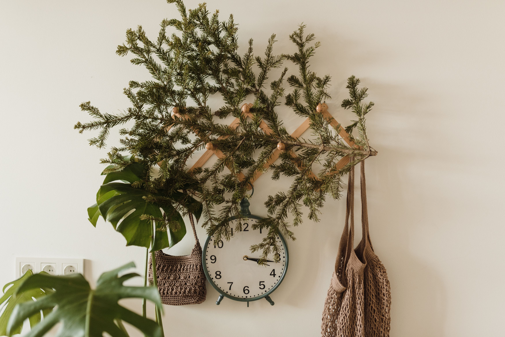

In This Article
- Start With the Light You Actually Have
- Pothos for Flexible Displays
- Snake Plant for Strong Vertical Lines
- ZZ Plant for Calm, Glossy Foliage
- Spider Plant for Shelves and Hanging Pots
- Peace Lily for Leafy Corners
- Monstera for a Larger Focal Point
- Use Plants at Different Heights
- Choose Containers for Both Design and Drainage
- Frequently Asked Questions
- Conclusion
Start With the Light You Actually Have
Choose plants after observing window direction, distance from glass, seasonal light, and obstructions outside. A plant selected for its appearance alone may decline if the room cannot provide the light it needs.
For best plants for decorating indoor spaces, this part of the plan deserves attention before you buy materials or change the space. Use start with the light you actually have as a checkpoint: look at the actual conditions, note practical limits, and decide what success should look like in daily use. Photographs, measurements, and a short written note can make the decision easier to review later. A deliberate approach also reduces the chance of solving one problem while creating another.
After the first change related to start with the light you actually have, observe the result under normal conditions instead of judging it immediately. Check access, maintenance, comfort, moisture, light, stability, and seasonal effects where they are relevant to best plants for decorating indoor spaces. Small adjustments made from real observation are usually more useful than adding several new features at once. Keep the solution simple enough that it can still be maintained months from now.
Pothos for Flexible Displays
Pothos is popular for trailing shelves and hanging planters and tolerates a range of indoor conditions, although brighter indirect light usually supports fuller growth. Allow the potting mix to dry appropriately between waterings and provide drainage.
For best plants for decorating indoor spaces, this part of the plan deserves attention before you buy materials or change the space. Use pothos for flexible displays as a checkpoint: look at the actual conditions, note practical limits, and decide what success should look like in daily use. Photographs, measurements, and a short written note can make the decision easier to review later. A deliberate approach also reduces the chance of solving one problem while creating another.
After the first change related to pothos for flexible displays, observe the result under normal conditions instead of judging it immediately. Check access, maintenance, comfort, moisture, light, stability, and seasonal effects where they are relevant to best plants for decorating indoor spaces. Small adjustments made from real observation are usually more useful than adding several new features at once. Keep the solution simple enough that it can still be maintained months from now.
Snake Plant for Strong Vertical Lines
Snake plants create architectural height without occupying much horizontal space. They are often suitable for bedrooms, offices, and narrow corners. Avoid keeping the root zone constantly wet, especially in lower light.
For best plants for decorating indoor spaces, this part of the plan deserves attention before you buy materials or change the space. Use snake plant for strong vertical lines as a checkpoint: look at the actual conditions, note practical limits, and decide what success should look like in daily use. Photographs, measurements, and a short written note can make the decision easier to review later. A deliberate approach also reduces the chance of solving one problem while creating another.

After the first change related to snake plant for strong vertical lines, observe the result under normal conditions instead of judging it immediately. Check access, maintenance, comfort, moisture, light, stability, and seasonal effects where they are relevant to best plants for decorating indoor spaces. Small adjustments made from real observation are usually more useful than adding several new features at once. Keep the solution simple enough that it can still be maintained months from now.
ZZ Plant for Calm, Glossy Foliage
The ZZ plant has sturdy stems and glossy leaves that work well in minimalist rooms. It tolerates lower light better than many decorative species, but growth is stronger with suitable indirect light. Its thick underground structures make overwatering a common mistake.
For best plants for decorating indoor spaces, this part of the plan deserves attention before you buy materials or change the space. Use zz plant for calm, glossy foliage as a checkpoint: look at the actual conditions, note practical limits, and decide what success should look like in daily use. Photographs, measurements, and a short written note can make the decision easier to review later. A deliberate approach also reduces the chance of solving one problem while creating another.
After the first change related to zz plant for calm, glossy foliage, observe the result under normal conditions instead of judging it immediately. Check access, maintenance, comfort, moisture, light, stability, and seasonal effects where they are relevant to best plants for decorating indoor spaces. Small adjustments made from real observation are usually more useful than adding several new features at once. Keep the solution simple enough that it can still be maintained months from now.
Spider Plant for Shelves and Hanging Pots
Spider plants have arching foliage and produce plantlets that add movement to a display. They work well on high shelves or in hanging containers where leaves can fall naturally without blocking circulation.
For best plants for decorating indoor spaces, this part of the plan deserves attention before you buy materials or change the space. Use spider plant for shelves and hanging pots as a checkpoint: look at the actual conditions, note practical limits, and decide what success should look like in daily use. Photographs, measurements, and a short written note can make the decision easier to review later. A deliberate approach also reduces the chance of solving one problem while creating another.

After the first change related to spider plant for shelves and hanging pots, observe the result under normal conditions instead of judging it immediately. Check access, maintenance, comfort, moisture, light, stability, and seasonal effects where they are relevant to best plants for decorating indoor spaces. Small adjustments made from real observation are usually more useful than adding several new features at once. Keep the solution simple enough that it can still be maintained months from now.
Peace Lily for Leafy Corners
Peace lilies offer broad green foliage and occasional white blooms under suitable conditions. They prefer more consistent moisture than drought-tolerant species but still need drainage. Keep placement appropriate for household pets and children.
For best plants for decorating indoor spaces, this part of the plan deserves attention before you buy materials or change the space. Use peace lily for leafy corners as a checkpoint: look at the actual conditions, note practical limits, and decide what success should look like in daily use. Photographs, measurements, and a short written note can make the decision easier to review later. A deliberate approach also reduces the chance of solving one problem while creating another.
After the first change related to peace lily for leafy corners, observe the result under normal conditions instead of judging it immediately. Check access, maintenance, comfort, moisture, light, stability, and seasonal effects where they are relevant to best plants for decorating indoor spaces. Small adjustments made from real observation are usually more useful than adding several new features at once. Keep the solution simple enough that it can still be maintained months from now.
Monstera for a Larger Focal Point
A healthy monstera can become a strong visual feature in a living room. Give it enough space for mature leaves, bright indirect light, and a support when growth begins to climb. Do not squeeze a large specimen into a narrow traffic path.
For best plants for decorating indoor spaces, this part of the plan deserves attention before you buy materials or change the space. Use monstera for a larger focal point as a checkpoint: look at the actual conditions, note practical limits, and decide what success should look like in daily use. Photographs, measurements, and a short written note can make the decision easier to review later. A deliberate approach also reduces the chance of solving one problem while creating another.

After the first change related to monstera for a larger focal point, observe the result under normal conditions instead of judging it immediately. Check access, maintenance, comfort, moisture, light, stability, and seasonal effects where they are relevant to best plants for decorating indoor spaces. Small adjustments made from real observation are usually more useful than adding several new features at once. Keep the solution simple enough that it can still be maintained months from now.
Use Plants at Different Heights
Combine floor plants, tabletop specimens, and trailing plants to create depth. Repeating similar pot colors can keep a mixed plant collection visually coherent while the foliage provides variety.
For best plants for decorating indoor spaces, this part of the plan deserves attention before you buy materials or change the space. Use use plants at different heights as a checkpoint: look at the actual conditions, note practical limits, and decide what success should look like in daily use. Photographs, measurements, and a short written note can make the decision easier to review later. A deliberate approach also reduces the chance of solving one problem while creating another.
After the first change related to use plants at different heights, observe the result under normal conditions instead of judging it immediately. Check access, maintenance, comfort, moisture, light, stability, and seasonal effects where they are relevant to best plants for decorating indoor spaces. Small adjustments made from real observation are usually more useful than adding several new features at once. Keep the solution simple enough that it can still be maintained months from now.
Choose Containers for Both Design and Drainage
Decorative cachepots can hide nursery pots, but excess water should not remain around roots. Match container scale to the plant and protect furniture from moisture with appropriate saucers or liners.
For best plants for decorating indoor spaces, this part of the plan deserves attention before you buy materials or change the space. Use choose containers for both design and drainage as a checkpoint: look at the actual conditions, note practical limits, and decide what success should look like in daily use. Photographs, measurements, and a short written note can make the decision easier to review later. A deliberate approach also reduces the chance of solving one problem while creating another.
After the first change related to choose containers for both design and drainage, observe the result under normal conditions instead of judging it immediately. Check access, maintenance, comfort, moisture, light, stability, and seasonal effects where they are relevant to best plants for decorating indoor spaces. Small adjustments made from real observation are usually more useful than adding several new features at once. Keep the solution simple enough that it can still be maintained months from now.
Frequently Asked Questions
There is no single best indoor plant for every room. Light, temperature, available space, watering habits, and household safety should guide the choice. Start with a few plants that match your conditions before expanding the collection.
For best plants for decorating indoor spaces, this part of the plan deserves attention before you buy materials or change the space. Use frequently asked questions as a checkpoint: look at the actual conditions, note practical limits, and decide what success should look like in daily use. Photographs, measurements, and a short written note can make the decision easier to review later. A deliberate approach also reduces the chance of solving one problem while creating another.
After the first change related to frequently asked questions, observe the result under normal conditions instead of judging it immediately. Check access, maintenance, comfort, moisture, light, stability, and seasonal effects where they are relevant to best plants for decorating indoor spaces. Small adjustments made from real observation are usually more useful than adding several new features at once. Keep the solution simple enough that it can still be maintained months from now.
Conclusion
Indoor plants decorate most successfully when healthy growth and visual placement support each other. Match each species to the room, use varied heights, keep drainage practical, and leave enough space for mature foliage.
For best plants for decorating indoor spaces, this part of the plan deserves attention before you buy materials or change the space. Use conclusion as a checkpoint: look at the actual conditions, note practical limits, and decide what success should look like in daily use. Photographs, measurements, and a short written note can make the decision easier to review later. A deliberate approach also reduces the chance of solving one problem while creating another.
After the first change related to conclusion, observe the result under normal conditions instead of judging it immediately. Check access, maintenance, comfort, moisture, light, stability, and seasonal effects where they are relevant to best plants for decorating indoor spaces. Small adjustments made from real observation are usually more useful than adding several new features at once. Keep the solution simple enough that it can still be maintained months from now.